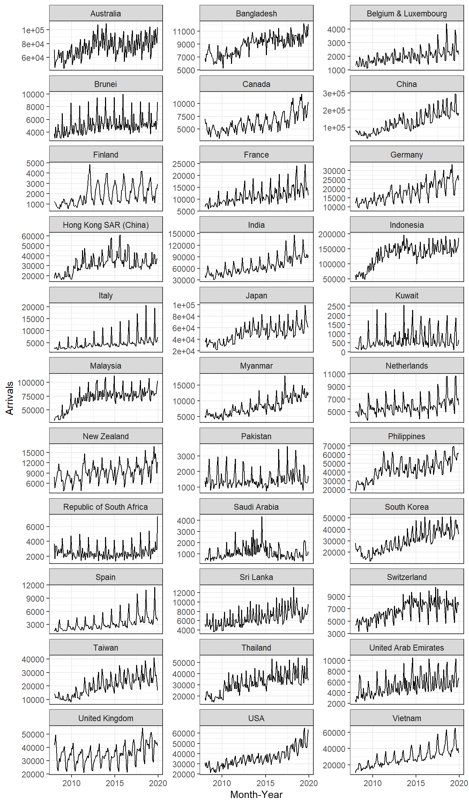
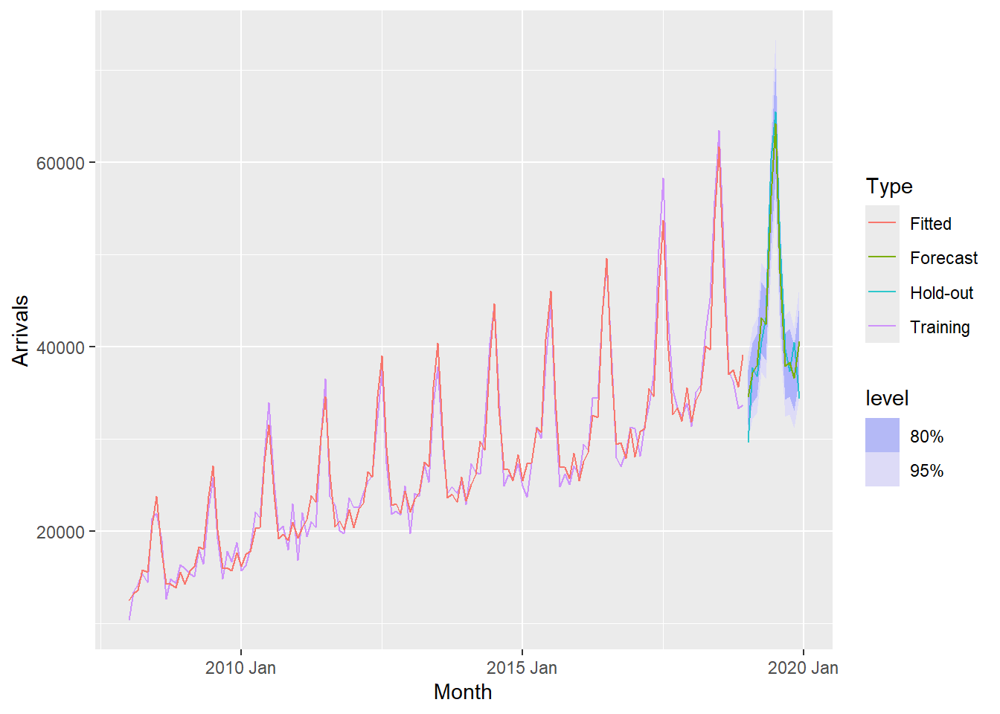

In class Exercise 7
1. Getting Started
1.1 Importing Data
converting from character to date field
1.2 Conventional base ts object versus tibble object
# A tibble: 144 × 34
`Month-Year` `Republic of South Africa` Canada USA Bangladesh Brunei China
<date> <dbl> <dbl> <dbl> <dbl> <dbl> <dbl>
1 2008-01-01 3680 6972 31155 6786 3729 79599
2 2008-02-01 1662 6056 27738 6314 3070 82074
3 2008-03-01 3394 6220 31349 7502 4805 72546
4 2008-04-01 3337 4764 26376 7333 3096 76112
5 2008-05-01 2089 4460 26788 7988 3586 64808
6 2008-06-01 2515 3888 29725 8301 5284 55238
7 2008-07-01 2919 5313 33183 9004 4070 80747
8 2008-08-01 2471 4519 27427 7913 4183 66625
9 2008-09-01 2492 3421 21588 7549 3160 52649
10 2008-10-01 3023 4756 25112 7527 2983 54423
# ℹ 134 more rows
# ℹ 27 more variables: `Hong Kong SAR (China)` <dbl>, India <dbl>,
# Indonesia <dbl>, Japan <dbl>, `South Korea` <dbl>, Kuwait <dbl>,
# Malaysia <dbl>, Myanmar <dbl>, Pakistan <dbl>, Philippines <dbl>,
# `Saudi Arabia` <dbl>, `Sri Lanka` <dbl>, Taiwan <dbl>, Thailand <dbl>,
# `United Arab Emirates` <dbl>, Vietnam <dbl>, `Belgium & Luxembourg` <dbl>,
# Finland <dbl>, France <dbl>, Germany <dbl>, Italy <dbl>, … Month-Year Republic of South Africa Canada USA Bangladesh Brunei China
[1,] 13879 3680 6972 31155 6786 3729 79599
[2,] 13910 1662 6056 27738 6314 3070 82074
[3,] 13939 3394 6220 31349 7502 4805 72546
[4,] 13970 3337 4764 26376 7333 3096 76112
[5,] 14000 2089 4460 26788 7988 3586 64808
[6,] 14031 2515 3888 29725 8301 5284 55238
Hong Kong SAR (China) India Indonesia Japan South Korea Kuwait Malaysia
[1,] 17103 41639 62683 37673 27937 284 31352
[2,] 21089 37170 47834 35297 22633 241 35030
[3,] 23230 44815 64688 42575 22876 206 37629
[4,] 17688 49527 58074 26839 20634 193 37521
[5,] 19340 67754 57089 30814 22785 140 38044
[6,] 19152 57380 70118 31001 22575 354 40419
Myanmar Pakistan Philippines Saudi Arabia Sri Lanka Taiwan Thailand
[1,] 5269 1395 18622 406 5289 13757 18370
[2,] 4643 1027 21609 591 4767 13921 16400
[3,] 6218 1635 28464 626 4988 11181 23387
[4,] 7324 1232 30131 644 7639 11665 24469
[5,] 5395 1306 30193 470 5125 11436 21935
[6,] 5542 1996 25800 772 4791 10689 19900
United Arab Emirates Vietnam Belgium & Luxembourg Finland France Germany
[1,] 2652 10315 1341 1179 6918 11982
[2,] 2230 13415 1449 1207 7876 13256
[3,] 3353 14320 1674 1071 8066 15185
[4,] 3245 15413 1426 768 8312 11604
[5,] 2856 14424 1243 690 7066 9853
[6,] 4292 21368 1255 624 5926 9347
Italy Netherlands Spain Switzerland United Kingdom Australia New Zealand
[1,] 2953 4938 1668 4450 41934 71260 7806
[2,] 2704 4885 1568 4381 44029 45595 4729
[3,] 2822 5015 2254 5015 49489 53191 6106
[4,] 3018 4902 1503 5434 35771 56514 7560
[5,] 2165 4397 1365 4427 24464 57808 9090
[6,] 2022 4166 1446 3359 22473 63350 96811.3 Converting tibble object to tsibble object
# A tsibble: 144 x 35 [1M]
`Month-Year` `Republic of South Africa` Canada USA Bangladesh Brunei China
<date> <dbl> <dbl> <dbl> <dbl> <dbl> <dbl>
1 2008-01-01 3680 6972 31155 6786 3729 79599
2 2008-02-01 1662 6056 27738 6314 3070 82074
3 2008-03-01 3394 6220 31349 7502 4805 72546
4 2008-04-01 3337 4764 26376 7333 3096 76112
5 2008-05-01 2089 4460 26788 7988 3586 64808
6 2008-06-01 2515 3888 29725 8301 5284 55238
7 2008-07-01 2919 5313 33183 9004 4070 80747
8 2008-08-01 2471 4519 27427 7913 4183 66625
9 2008-09-01 2492 3421 21588 7549 3160 52649
10 2008-10-01 3023 4756 25112 7527 2983 54423
# ℹ 134 more rows
# ℹ 28 more variables: `Hong Kong SAR (China)` <dbl>, India <dbl>,
# Indonesia <dbl>, Japan <dbl>, `South Korea` <dbl>, Kuwait <dbl>,
# Malaysia <dbl>, Myanmar <dbl>, Pakistan <dbl>, Philippines <dbl>,
# `Saudi Arabia` <dbl>, `Sri Lanka` <dbl>, Taiwan <dbl>, Thailand <dbl>,
# `United Arab Emirates` <dbl>, Vietnam <dbl>, `Belgium & Luxembourg` <dbl>,
# Finland <dbl>, France <dbl>, Germany <dbl>, Italy <dbl>, …2.Visualising Time-series Data
2.1 Visualising single time-series: ggplot2 methods
2.2 Plotting multiple time-series data with ggplot2 methods
ggplot(data = ts_longer,
aes(x = `Month-Year`,
y = Arrivals,
color = Country))+
geom_line(size = 0.5) +
theme(legend.position = "bottom",
legend.box.spacing = unit(0.5, "cm"))

3. Visual Analysis of Time-series Data
3.1 Visual Analysis of Seasonality with Seasonal Plot

3.2 Visual Analysis of Seasonality with Cycle Plot

4. Time series decomposition
4.1 Single time series decomposition


4.2 Multiple time-series decomposition

4.3 Composite plot of time series decomposition

5.Visual STL Diagnostics
5.1 Visual STL diagnostics with feasts

5.2 Classical Decomposition with feasts

6. Visual Forecasting
6.1 Time Series Data Sampling
6.2 Exploratory Data Analysis (EDA): Time Series Data
6.3 Fitting forecasting models
6.3.1 Fitting Exponential Smoothing State Space (ETS) Models: fable methods
6.3.2 Fitting a simple exponential smoothing (SES)
6.3.3 Examine Model Assumptions
6.3.4 The model details
6.3.5 Trend methods
vietnam_H <- vietnam_train %>%
model(`Holt's method` =
ETS(Arrivals ~ error("A") +
trend("A") +
season("N")))
vietnam_H %>% report()Series: Arrivals
Model: ETS(A,A,N)
Smoothing parameters:
alpha = 0.9998995
beta = 0.0001004625
Initial states:
l[0] b[0]
13673.29 525.8859
sigma^2: 28584805
AIC AICc BIC
2916.695 2917.171 2931.109 6.3.6 Damped Trend methods
vietnam_HAd <- vietnam_train %>%
model(`Holt's method` =
ETS(Arrivals ~ error("A") +
trend("Ad") +
season("N")))
vietnam_HAd %>% report()Series: Arrivals
Model: ETS(A,Ad,N)
Smoothing parameters:
alpha = 0.9998999
beta = 0.0001098602
phi = 0.9784562
Initial states:
l[0] b[0]
13257.28 523.54
sigma^2: 28641536
AIC AICc BIC
2917.921 2918.593 2935.218 6.3.7 Checking for results
6.4 Fitting ETS Methods with Season: Holt-Winters
Vietnam_WH <- vietnam_train %>%
model(
Additive = ETS(Arrivals ~ error("A")
+ trend("A")
+ season("A")),
Multiplicative = ETS(Arrivals ~ error("M")
+ trend("A")
+ season("M"))
)
Vietnam_WH %>% report()# A tibble: 2 × 10
Country .model sigma2 log_lik AIC AICc BIC MSE AMSE MAE
<chr> <chr> <dbl> <dbl> <dbl> <dbl> <dbl> <dbl> <dbl> <dbl>
1 Vietnam Additive 5.33e+6 -1336. 2706. 2711. 2755. 4.68e6 8.56e6 1.72e+3
2 Vietnam Multiplicative 4.55e-3 -1300. 2635. 2640. 2684. 3.05e6 3.42e6 5.20e-26.5 Fitting multiple ETS Models
fit_ETS <- vietnam_train %>%
model(`SES` = ETS(Arrivals ~ error("A") +
trend("N") +
season("N")),
`Holt`= ETS(Arrivals ~ error("A") +
trend("A") +
season("N")),
`damped Holt` =
ETS(Arrivals ~ error("A") +
trend("Ad") +
season("N")),
`WH_A` = ETS(
Arrivals ~ error("A") +
trend("A") +
season("A")),
`WH_M` = ETS(Arrivals ~ error("M")
+ trend("A")
+ season("M"))
)6.6 The model coefficient
# A tibble: 45 × 4
Country .model term estimate
<chr> <chr> <chr> <dbl>
1 Vietnam SES alpha 1.00
2 Vietnam SES l[0] 10313.
3 Vietnam Holt alpha 1.00
4 Vietnam Holt beta 0.000100
5 Vietnam Holt l[0] 13673.
6 Vietnam Holt b[0] 526.
7 Vietnam damped Holt alpha 1.00
8 Vietnam damped Holt beta 0.000110
9 Vietnam damped Holt phi 0.978
10 Vietnam damped Holt l[0] 13257.
# ℹ 35 more rows6.7 Model Comparison
# A tibble: 5 × 10
Country .model sigma2 log_lik AIC AICc BIC MSE AMSE MAE
<chr> <chr> <dbl> <dbl> <dbl> <dbl> <dbl> <dbl> <dbl> <dbl>
1 Vietnam SES 2.79e+7 -1453. 2912. 2912. 2920. 27515844. 5.99e7 3.91e+3
2 Vietnam Holt 2.86e+7 -1453. 2917. 2917. 2931. 27718599. 6.03e7 3.92e+3
3 Vietnam damped Holt 2.86e+7 -1453. 2918. 2919. 2935. 27556629. 5.97e7 3.92e+3
4 Vietnam WH_A 5.33e+6 -1336. 2706. 2711. 2755. 4684271. 8.56e6 1.72e+3
5 Vietnam WH_M 4.55e-3 -1300. 2635. 2640. 2684. 3046059. 3.42e6 5.20e-26.8 Forecasting future values
6.9 Fitting ETS Automatically
Series: Arrivals
Model: ETS(M,A,M)
Smoothing parameters:
alpha = 0.1613503
beta = 0.0001021811
gamma = 0.0001030996
Initial states:
l[0] b[0] s[0] s[-1] s[-2] s[-3] s[-4] s[-5]
15001.12 212.3552 0.9167302 0.8311728 0.8739287 0.8690543 1.104668 1.485584
s[-6] s[-7] s[-8] s[-9] s[-10] s[-11]
1.311207 0.9917759 1.014187 0.8973028 0.8816768 0.8227129
sigma^2: 0.0046
AIC AICc BIC
2634.751 2640.119 2683.759 6.10 Fitting Fitting ETS Automatically
6.11 Forecast the future values

6.12 Visualising AutoETS model with ggplot2
fc_autoETS <- fit_autoETS %>%
forecast(h = "12 months")
vietnam_ts %>%
ggplot(aes(x=`Month`,
y=Arrivals)) +
autolayer(fc_autoETS,
alpha = 0.6) +
geom_line(aes(
color = Type),
alpha = 0.8) +
geom_line(aes(
y = .mean,
colour = "Forecast"),
data = fc_autoETS) +
geom_line(aes(
y = .fitted,
colour = "Fitted"),
data = augment(fit_autoETS))
7. AutoRegressive Integrated Moving Average(ARIMA) Methods for Time Series Forecasting: fable (tidyverts) methods
7.1 Visualising Autocorrelations: feasts methods

7.2 Visualising Autocorrelations: feasts methods

7.3 Differencing: fable methods
7.3.1 Trend differencing

7.3.2 Seasonal differencing
7.4 Fitting ARIMA models manually: fable methods
fit_arima <- vietnam_train %>%
model(
arima200 = ARIMA(Arrivals ~ pdq(2,0,0)),
sarima210 = ARIMA(Arrivals ~ pdq(2,0,0) +
PDQ(2,1,0))
)
report(fit_arima)# A tibble: 2 × 9
Country .model sigma2 log_lik AIC AICc BIC ar_roots ma_roots
<chr> <chr> <dbl> <dbl> <dbl> <dbl> <dbl> <list> <list>
1 Vietnam arima200 4173906. -1085. 2181. 2182. 2198. <cpl [26]> <cpl [0]>
2 Vietnam sarima210 4173906. -1085. 2181. 2182. 2198. <cpl [26]> <cpl [0]>7.5 Fitting ARIMA models automatically: fable methods
7.6 Model Comparison
bind_rows(
fit_autoARIMA %>% accuracy(),
fit_autoETS %>% accuracy(),
fit_autoARIMA %>%
forecast(h = 12) %>%
accuracy(vietnam_ts),
fit_autoETS %>%
forecast(h = 12) %>%
accuracy(vietnam_ts)) %>%
select(-ME, -MPE, -ACF1)# A tibble: 4 × 8
Country .model .type RMSE MAE MAPE MASE RMSSE
<chr> <chr> <chr> <dbl> <dbl> <dbl> <dbl> <dbl>
1 Vietnam ARIMA(Arrivals) Training NaN NaN NaN NaN NaN
2 Vietnam ETS(Arrivals) Training 1745. 1386. 5.29 0.467 0.473
3 Vietnam ARIMA(Arrivals) Test NaN NaN NaN NaN NaN
4 Vietnam ETS(Arrivals) Test 3163. 2636. 6.64 0.889 0.8577.7 Forecast Multiple Time Series
7.8 Fitting Mulltiple Time Series
7.9 Examining Models
# A tibble: 5 × 10
Country .model sigma2 log_lik AIC AICc BIC MSE AMSE MAE
<chr> <chr> <dbl> <dbl> <dbl> <dbl> <dbl> <dbl> <dbl> <dbl>
1 Indonesia ets 0.0102 -1561. 3156. 3161. 3205. 173901516. 1.80e8 0.0732
2 Malaysia ets 0.00467 -1430. 2894. 2899. 2943. 20381756. 2.00e7 0.0506
3 Philippines ets 0.00356 -1343. 2722. 2728. 2774. 5282584. 7.58e6 0.0461
4 Thailand ets 0.00663 -1343. 2722. 2728. 2774. 5396141. 6.33e6 0.0584
5 Vietnam ets 0.00455 -1300. 2635. 2640. 2684. 3046059. 3.42e6 0.05207.10 Extracintg fitted and residual values
# A tsibble: 1,320 x 7 [1M]
# Key: Country, .model [10]
Country .model Month Arrivals .fitted .resid .innov
<chr> <chr> <mth> <dbl> <dbl> <dbl> <dbl>
1 Indonesia ets 2008 Jan 62683 56534. 6149. 0.109
2 Indonesia ets 2008 Feb 47834 46417. 1417. 0.0305
3 Indonesia ets 2008 Mar 64688 62660. 2028. 0.0324
4 Indonesia ets 2008 Apr 58074 61045. -2971. -0.0487
5 Indonesia ets 2008 May 57089 62280. -5191. -0.0833
6 Indonesia ets 2008 Jun 70118 75791. -5673. -0.0749
7 Indonesia ets 2008 Jul 73805 78691. -4886. -0.0621
8 Indonesia ets 2008 Aug 58015 61910. -3895. -0.0629
9 Indonesia ets 2008 Sept 63730 74518. -10788. -0.145
10 Indonesia ets 2008 Oct 71206 67869. 3337. 0.0492
# ℹ 1,310 more rows7.11 Comparing Fit Models
# A tibble: 10 × 11
Country .model .type ME RMSE MAE MPE MAPE MASE RMSSE
<chr> <chr> <chr> <dbl> <dbl> <dbl> <dbl> <dbl> <dbl> <dbl>
1 Indonesia ets Trai… -1813. 13187. 9665. -1.83 7.57 0.556 0.619
2 Indonesia arima Trai… NaN NaN NaN NaN NaN NaN NaN
3 Malaysia ets Trai… -678. 4515. 3538. -1.25 5.15 0.529 0.527
4 Malaysia arima Trai… NaN NaN NaN NaN NaN NaN NaN
5 Philippines ets Trai… -2.35 2298. 1897. -0.334 4.64 0.464 0.408
6 Philippines arima Trai… NaN NaN NaN NaN NaN NaN NaN
7 Thailand ets Trai… 19.7 2323. 1773. -0.511 5.89 0.489 0.485
8 Thailand arima Trai… NaN NaN NaN NaN NaN NaN NaN
9 Vietnam ets Trai… -35.2 1745. 1386. -0.728 5.29 0.467 0.473
10 Vietnam arima Trai… NaN NaN NaN NaN NaN NaN NaN
# ℹ 1 more variable: ACF1 <dbl>